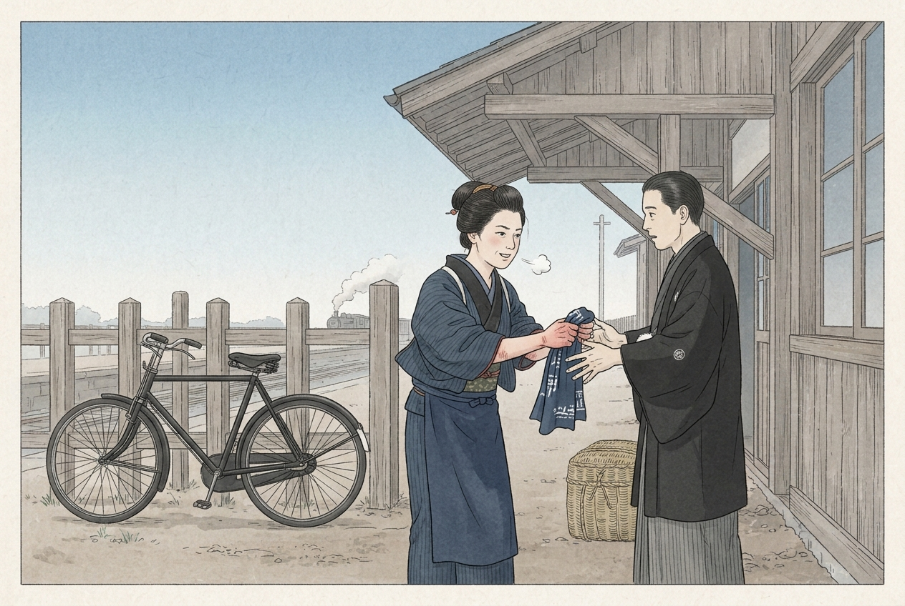
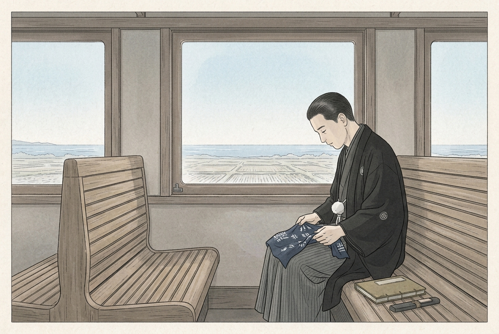

三好とお園は、いない。ただ、大正九年に熱海線が国府津から小田原まで通り、小田原の駅から汽車で東海道へ出られるようになっていた。大正十一年二月一日に山縣が古稀庵で没し、九日に日比谷で葬儀があった。
四分類：骨格は、山縣の没（大正十一年二月一日、古稀庵）、日比谷での葬儀（二月九日）、熱海線の国府津と小田原のあいだの開通（大正九年）、当時の東海道本線が御殿場を回っていたこと。創作は、三好（架空）とお園（架空）、二月十六日という日付、駅の場面と会話のすべて、手拭いとその温み、帳面の書きつけ。山縣の「興津へ行け」は、作中の小品「言伝て」と「三好の手紙」に合わせた創作。熱海線の開通の月は要照合。参照：小品「坂と梅」「大根」、物語「三好の手帳」（昭和二十一年春）。
挿絵はAIで作成しました。